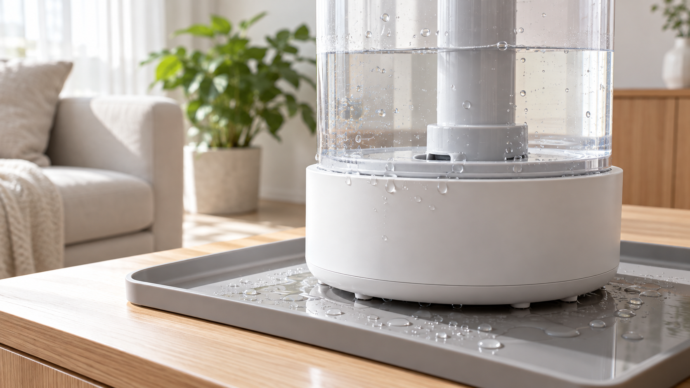

가습기 주변에 물이 고이면 먼저 플러그를 뽑고 본체를 마른 곳으로 옮기세요. 물통 뚜껑·패킹의 체결 불량인지, 과다 급수나 균열인지 구분한 뒤 완전히 말리고 시험해야 합니다.
| 물이 보이는 곳 | 가능성이 큰 원인 |
|---|---|
| 물통 아래 | 뚜껑·패킹 체결, 밸브 이물 |
| 본체 옆면 | 수위 초과, 기울어진 설치 |
| 바닥 전체 | 물통 미세 균열, 본체 내부 누수 |
본체 통풍구와 전기부에 물을 붓지 말고, 서로 다른 세정제를 섞지 마세요. 물통에 금이 가거나 전원부에서 물이 나온 흔적이 있으면 시험 운전을 중단합니다.
패킹을 바로 끼워도 계속 새거나, 본체 내부로 물이 들어갔거나, 전원 이상이 동반되면 모델명과 누수 위치 사진을 준비해 점검받으세요. 가습기 냄새 제거법과 미스트가 안 나올 때 점검법도 함께 참고하세요.
정확한 패킹 방향과 세척 범위는 해당 모델의 제조사 사용설명서를 우선 확인하세요.